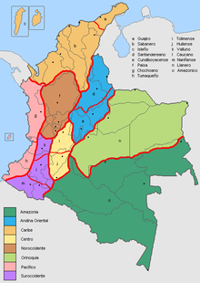

El Caribe, el Pacífico, la Orinoquía, la Amazonía, la Andina e Insular son las seis regiones naturales de Colombia, cada una con sus propias características, costumbres, gastronomía y música.
 guacamayaldayanisvanegas
dayanisoyunapersonadivertidaymegustamucholacomidayvervideos
| diasdelasemana | actividad |
| lunes | entregable1 |